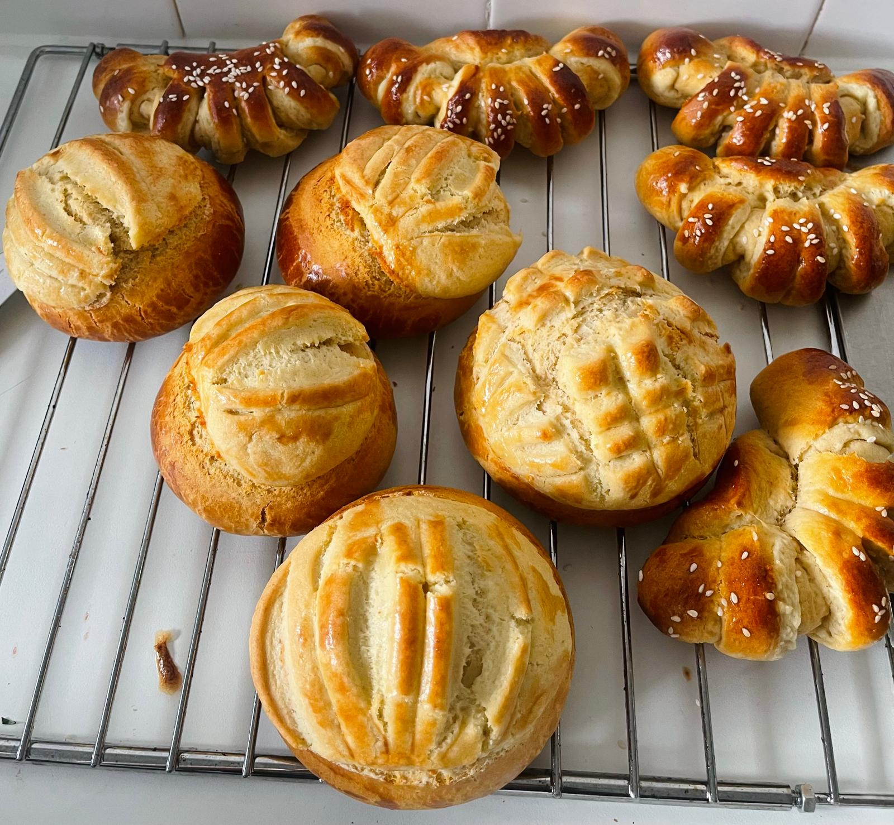
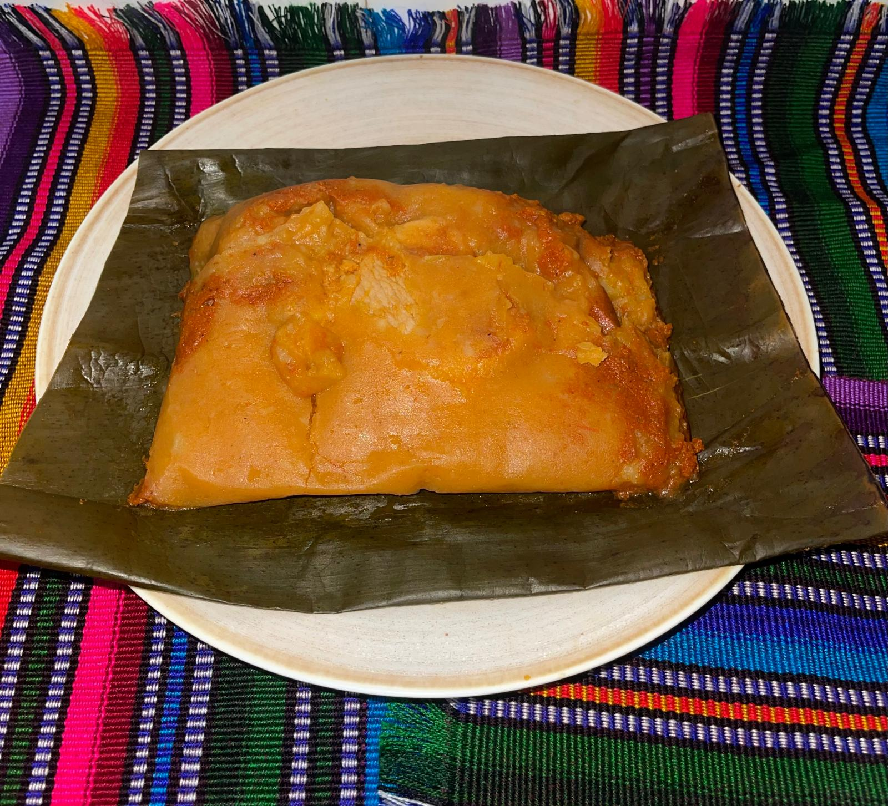

Menú

Pan Dulce
Guiso tradicional con especias, arroz y tortillas.
£1

Mole
Postre tipico de todo Guatemala£10

Tamales
Hechos a mano con receta auténtica.
£6
📍 Recogida en Londres SW8 (zona Vauxhall)
📅 Solo pedidos por encargo
🇬🇹 Recetas tradicionales guatemaltecas hechas en casa
📅 Solo pedidos por encargo
🇬🇹 Recetas tradicionales guatemaltecas hechas en casa